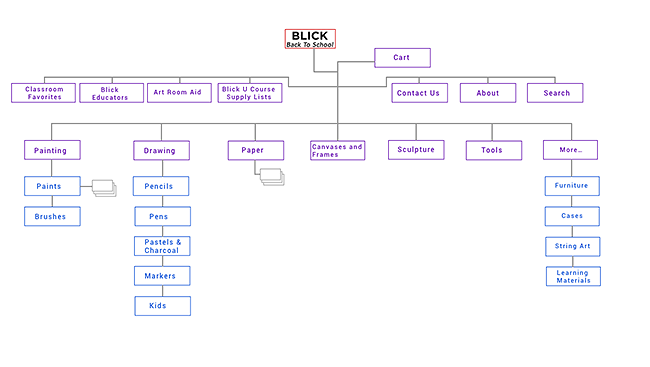

CHRIS EICHLERUX DESIGNER AND RESEARCHER
BLICK BACK TO SCHOOL
Ecommerce Web App Design • Timeframe: 2 weeks • Role: Designer
Blick Art Supplies has become the largest fine arts retailer in the nation, after growing for years and acquiring some competitors. In this project the goal was to add some new digital flair to the Blick brand. I designed a back-to-school site for Blick to feature 100 of its popular back-to-school products.
This was to be a responsive website, with a design that functioned in desktop, tablet, and mobile. It was also a challenge of information architecture, requiring a sorting and choosing of products.
To be clear: this project was not requested by Blick and has no real connection to Blick. Rather, it's an excercise in the challenges of making a responsive e-commerce website for a company with thousands of products in its inventory.
Architecture of Information
As the largest fine art retailer, Blick carries thousands of highly specialized items. Categorizing this inventory is a challenge of information architecture. What is the hierarchy? What are the groups? The answers are not obvious. So I did a different kind of user testing. Information architecture questions meant that 'card sorting' was a tool that would be useful. We made one hundred cards with names and pictures of items and asked people to sort them into categories that made sense for them.
A user card sorting 100 items from the Blick inventory.
Card sorting was a challenge that some people seemed to enjoy while others found it infuriating. For many a lot of the artist materials were difficult to understand. There were things like acrylic mediums, gesso, guache, vellum, fixative spray, wire mesh, and plaster of paris. After several users had sorted in 'open card sorts', making up their own categories, I took the time to consolidate their categories, coming up with master categories. Then I had uers do 'closed card sorts' in which they fit the same cards into those categories as well as they could. This was a way to validate the categories.
We can't assume how our users see the world.
In the end I came up with the following sitemap which portrays the architecture of information that I settled on after my user research.

Designing for Back to School
The design process of mobile-first, although for my main user type the desktop size was more important. But I feel it’s important to follow mobile-first design principles, and I started with a basic structure that looked like the below image.

Users
HashTravel App already existed, so in this project one we were able to start with some user testing. These early tests of the existing product let us know what was working and what was not. To be able to start with these insights was invaluable
We needed more users though, so we posted a screener/research survey which received 55 responses. From these we contacted 7 for in-depth interviews about travel.


Interviews with insightful people guided us in our reimagining of HashTravel.
Analysis - Narrowing the Focus
Bringing together all of the information we gathered, we created a new structure for HashTravel. Our tools were whiteboards, notebooks, and many Sketch files. We were dealing with an app and a user flow of some complexity and we needed to make sure that our most important user experiences did not get lost in the structure. What was the most important experience? After talking to our users we decided it was sharing stories about travel with each other.

Design and Iterations
We worked in successive iterations which we tested with users, gradually refining. Each team member took responsibility for different parts of the user flows, and in the end we brought to gether all our files and refined them with one aesthetic.